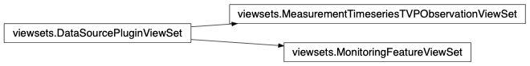
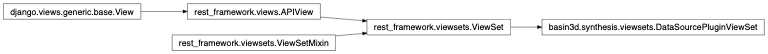

Synthesis Views¶
This is the main package, containing the BASIN-3D Django Framework’s synthesis view classes used for building custom a brokering service.
basin3d.synthesis.viewsets¶
- synopsis
BASIN-3D Synthesis Model Viewsets (View Controllers) that support the REST API
- module author
Val Hendrix <vhendrix@lbl.gov>
- module author
Danielle Svehla Christianson <dschristianson@lbl.gov>
Below is the inheritance diagram for BASIN-3D Viewsets. All of the views are based on
DataSourcePluginViewSet which provide all the synthesis logic for viewing data
from the connected data sources.

-
class
basin3d.synthesis.viewsets.DataSourcePluginViewSet(**kwargs)[source]¶ Bases:
rest_framework.viewsets.ViewSetBase ViewsSet for all DataSource plugins. The inheritance diagram shows that this class extends the Django Rest Framework class
rest_framework.viewsets.ViewSet. These are based on Django generic views.
-
list(request, format=None)[source]¶ Return the synthesized plugin results
- Parameters
request (
rest_framework.request.Request) – The incoming request objectformat (
Optional[str]) – The format to present the data (default is json)
- Returns
The HTTP Response
- Return type
rest_framework.request.Response
-
retrieve(request, pk)[source]¶ Retrieve a single synthesized value
- Parameters
request (
rest_framework.request.Request) – The request objectpk (
str) – The primary key
- Returns
The HTTP Response
- Return type
rest_framework.request.Response
-
synthesize_query_params(request, plugin_view)[source]¶ Synthesizes query parameters, if necessary
- Parameters
request – the request to synthesize
plugin_view (
DataSourcePluginViewSet) – The plugin view to synthesize query params for
- Return type
Dict[str,str]- Returns
The query parameters
-
versioning_class¶ alias of
rest_framework.versioning.NamespaceVersioning
-
-
class
basin3d.synthesis.viewsets.MeasurementTimeseriesTVPObservationViewSet(**kwargs)[source]¶ Bases:
basin3d.synthesis.viewsets.DataSourcePluginViewSetMeasurementTimeseriesTVPObservation: Series of measurement (numerical) observations in TVP (time value pair) format grouped by time (i.e., a timeseries).
Properties
id: string, Observation identifier (optional)
type: enum, MEASUREMENT_TVP_TIMESERIES
observed_property: url, URL for the observation’s observed property
phenomenon_time: datetime, datetime of the observation, for a timeseries the start and end times can be provided
utc_offset: float, Coordinate Universal Time offset in hours (offset in hours), e.g., +9
feature_of_interest: MonitoringFeature obj, feature on which the observation is being made
feature_of_interest_type: enum (FeatureTypes), feature type of the feature of interest
result_points: list of TimeValuePair obj, observed values of the observed property being assessed
time_reference_position: enum, position of timestamp in aggregated_duration (START, MIDDLE, END)
aggregation_duration: enum, time period represented by observation (YEAR, MONTH, DAY, HOUR, MINUTE, SECOND)
unit_of_measurement: string, units in which the observation is reported
statistic: enum, statistical property of the observation result (MEAN, MIN, MAX, TOTAL)
result_quality: enum, quality assessment of the result (CHECKED, UNCHECKED)
Filter by the following attributes (?attribute=parameter&attribute=parameter&…):
monitoring_features (required): comma separated list of monitoring_features ids
observed_property_variables (required): comma separated list of observed property variable ids
start_date (required): date YYYY-MM-DD
end_date (optional): date YYYY-MM-DD
aggregation_duration (default: DAY): enum (YEAR|MONTH|DAY|HOUR|MINUTE|SECOND)
datasource (optional): a single data source id prefix (e.g ?datasource=`datasource.id_prefix`)
Restrict fields with query parameter ‘fields’. (e.g. ?fields=id,name)
-
serializer_class¶ alias of
basin3d.synthesis.serializers.MeasurementTimeseriesTVPObservationSerializer
-
synthesis_model¶ alias of
basin3d.synthesis.models.measurement.MeasurementTimeseriesTVPObservation
-
synthesize_query_params(request, plugin_view)[source]¶ Synthesizes query parameters, if necessary
- Parameters Synthesized:
monitoring_features
observed_property_variables
aggregation_duration (default: DAY)
quality_checked
- Parameters
request (
rest_framework.request.Request) – the request to synthesizeplugin_view (
DataSourcePluginViewSet) – The plugin view to synthesize query params for
- Return type
Dict[str,str]- Returns
The query parameters
-
class
basin3d.synthesis.viewsets.MonitoringFeatureViewSet(**kwargs)[source]¶ Bases:
basin3d.synthesis.viewsets.DataSourcePluginViewSetMonitoringFeature: A feature upon which monitoring is made. OGC Timeseries Profile OM_MonitoringFeature.
Properties
id: string, Unique feature identifier
name: string, Feature name
description: string, Description of the feature
feature_type: sting, FeatureType: REGION, SUBREGION, BASIN, SUBBASIN, WATERSHED, SUBWATERSHED, SITE, PLOT, HORIZONTAL PATH, VERTICAL PATH, POINT
observed_property_variables: list of observed variables made at the feature. Observed property variables are configured via the plugins.
related_sampling_feature_complex: list of related_sampling features. PARENT features are currently supported.
shape: string, Shape of the feature: POINT, CURVE, SURFACE, SOLID
coordinates: location of feature in absolute and/or representative datum
description_reference: string, additional information about the Feature
related_party: (optional) list of people or organizations responsible for the Feature
utc_offset: float, Coordinate Universal Time offset in hours (offset in hours), e.g., +9
url: url, URL with details for the feature
Filter by the following attributes (/?attribute=parameter&attribute=parameter&…)
datasource (optional): a single data source id prefix (e.g ?datasource=`datasource.id_prefix`)
Restrict fields with query parameter ‘fields’. (e.g. ?fields=id,name)
-
extract_type(request)[source]¶ Extract the feature types from the request
- Parameters
request – The Request object
- Returns
Tuple (feature_type_code, feature_type_name). (e.g (0, ‘REGION’)
- Return type
tuple
-
serializer_class¶ alias of
basin3d.synthesis.serializers.MonitoringFeatureSerializer
-
synthesis_model¶
-
synthesize_query_params(request, plugin_view)[source]¶ Synthesizes query parameters, if necessary
Parameters Synthesized:
- Parameters
request (
rest_framework.request.Request) – the request to synthesizeplugin_view (
DataSourcePluginViewSet) – The plugin view to synthesize query params for
- Return type
Dict[str,str]- Returns
The query parameters